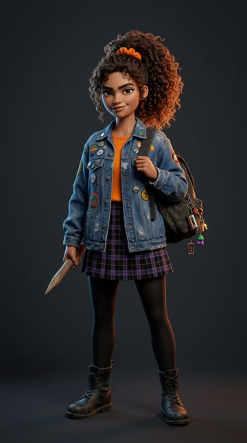
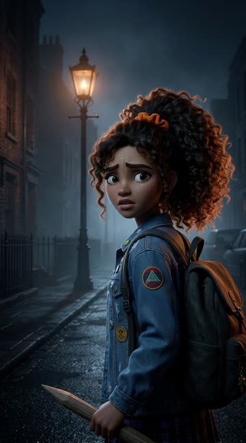
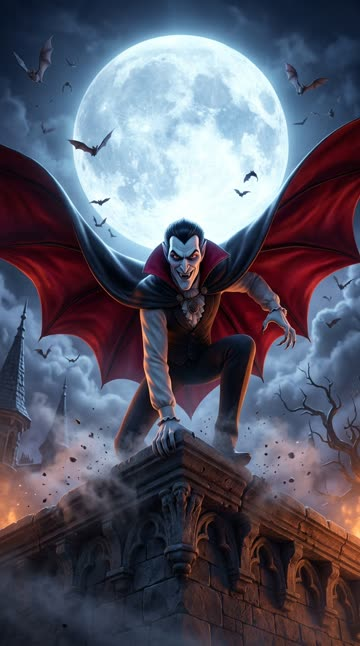
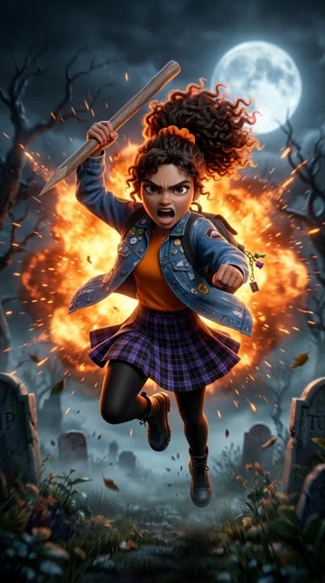
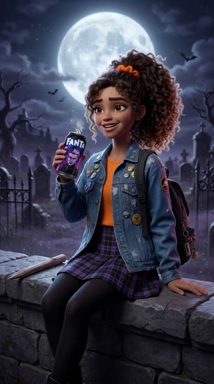
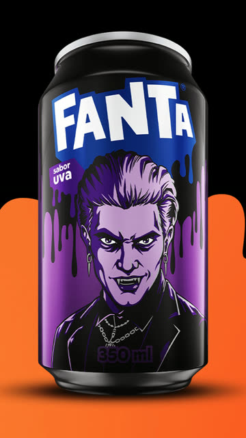

Workshop Motion Code · o vídeo da aula
Fanta Halloween, do roteiro ao MP4.
Como a gente fez o anúncio "Sessão da Meia-Noite": 32 segundos, sem locução, com uma personagem criada no Flow e o motion feito no HyperFrames. Cada etapa tem o prompt pronto para copiar.






Etapa 1
A ideia em uma linha.
Antes de abrir qualquer ferramenta: uma garota é perseguida por um vampiro na noite de Halloween, enfrenta o medo, vence e comemora com a Fanta que estava com ela o tempo todo.
Por que vampiro? A campanha da Fanta deste ano fala de filmes de terror e tem o Drácula entre os personagens da lata. A ideia nasceu de olhar a página oficial da marca antes de escrever.
Etapa 2
O roteiro sem locução.
Sem voz, quem conta a história é a imagem. O teste é simples: tampe os textos e veja se ainda dá para entender.
Escreva o roteiro de um anúncio de 30 segundos, 9:16, sem locução, para a marca [MARCA]. Tema: [TEMA]. Referência de estilo: [FILME OU ANÚNCIO QUE VOCÊ GOSTA]. Use só o clima, com personagens originais. Divida em 6 a 8 cenas. Em cada uma: tempo, o que a gente vê, texto na tela (no máximo 6 palavras) e som. A história tem que ser entendida sem ler nada. Mostre o produto logo no começo, escondido na cena, e faça ele voltar no final como recompensa.
| Tempo | Cena | O que acontece |
|---|---|---|
| 0–3 s | A noite | Lua cheia, Nina sozinha na rua, a lata no bolso da mochila. |
| 3–7 s | Alguém atrás | Os postes apagam, uma sombra de capa passa no muro. |
| 7–12 s | Corre | Olhos vermelhos no escuro, a fuga e uma revoada de morcegos. |
| 12–16 s | Sem saída | Portão trancado. O vampiro pousa na frente dela. |
| 16–20 s | O medo | Ela puxa a estaca. Olho no olho. "MEDO?" |
| 20–23 s | O golpe | Clarão laranja, e o vampiro vira poeira. |
| 23–26 s | A parceira | Ela abre a Fanta e sorri. A câmera entra na lua. |
| 26–32 s | Assinatura | "Enfrente seu maior medo / com seu parceiro de sempre" e a lata. |
Etapa 3
A personagem no Flow.
Gere em dois estilos (3D de animação e cinema 35mm) e escolha com a cabeça do cliente. Para refrigerante, o 3D ficou mais leve e manteve o rosto igual em todas as cenas.
Peça corpo inteiro, de frente, com fundo liso. É essa imagem que vira a referência das próximas.
Envie a escolhida ao Flow com um nome curto, como nina. Daqui pra frente, todo pedido começa com {nina}.
Personagem original para um anúncio de Halloween: Nina, estudante brasileira do ensino médio nos anos 90 que é caçadora de vampiros. Pele morena clara, cabelo cacheado volumoso castanho-escuro preso num rabo de cavalo alto com scrunchie laranja, sobrancelhas marcadas, olhar confiante e um meio sorriso. Roupa: jaqueta jeans oversized com patches, camiseta laranja, saia plissada xadrez preta e roxa, meia-calça preta, coturno preto, mochila escura com chaveiros num ombro. Segura uma estaca de madeira na mão direita, apontada para baixo. Corpo inteiro, de frente, em pé no centro da imagem. Fundo liso cinza-escuro de estúdio. Estilo: animação 3D de longa-metragem de estúdio, iluminação cinematográfica com luz fria azulada de lua vinda da esquerda e contraluz laranja quente. Sem texto, sem logotipo.
O laranja da camiseta e do scrunchie não é por acaso: a personagem já carrega a cor da marca.
Etapa 4
As cenas, sempre com a mesma Nina.
Uma imagem por momento do roteiro. O segredo da consistência é repetir o fim do prompt em todas.
[O QUE ACONTECE NA CENA, com {nina} e o enquadramento: plano aberto, close, de baixo para cima...]
Estilo: animação 3D de longa-metragem de estúdio, mesma personagem {nina} (mesmo rosto, cabelo, roupa). Luz fria azulada da lua e contraluz laranja quente, clima de filme de terror adolescente dos anos 90. Sem texto, sem logotipo.As 11 cenas do vídeo
- 01 Rua vazia, lua enorme, Nina caminhando pequena no canto.
- 02 Close dela olhando por cima do ombro, assustada.
- 03 Só a sombra de um vampiro de capa no muro de tijolos.
- 04 Dois olhos vermelhos no escuro.
- 05 Nina correndo em direção à câmera.
- 06 Nina encostada no portão trancado do cemitério.
- 07 O vampiro pousando com a capa aberta, visto de baixo.
- 08 Close da mão puxando a estaca.
- 09 Close extremo dos olhos dela, decididos.
- 10 Nina avançando com a estaca, explosão laranja atrás.
- 11 Nina sentada no muro com a lata de Fanta na mão.
A lata de verdade
Não peça para a IA "inventar" a lata: ela erra o logo. Baixe a foto oficial do produto, envie ao Flow como lata e use {lata} no pedido.
{nina} sentada no muro baixo de pedra do cemitério à noite, aliviada e sorrindo, segurando na mão direita a lata de refrigerante {lata} perto do rosto, com o rótulo de frente para a câmera e bem visível, a lata acabou de ser aberta e solta um pouco de gás. Lua cheia grande atrás. Plano médio. Estilo: animação 3D de longa-metragem de estúdio, mesma personagem {nina} e a lata igual à {lata}. Luz fria azulada da lua e contraluz laranja quente. Sem outros textos.Etapa 5
O motion no HyperFrames.
Ainda não instalou o HyperFrames? Comece pelo guia do aluno. Aqui as imagens paradas viram filme: a câmera desce da lua, aperta no susto, treme no impacto, e os morcegos fazem o corte.
Abra o Claude, aba Code, numa pasta fora do OneDrive (ex.: C:\HyperFrames).
Cole o prompt abaixo e arraste as 11 cenas, a foto da lata e o logo para o chat.
Ele mostra 3 quadros antes de renderizar. Aprove ou peça o ajuste ali mesmo.
Crie um vídeo motion com o HyperFrames, numa pasta nova chamada fanta-halloween. TEMA: anúncio de Halloween da Fanta, sem locução. A Nina foge de um vampiro, vence o medo e comemora com uma Fanta. REFERÊNCIA: terror adolescente dos anos 90: cortes rápidos, câmera que aperta no susto, texto gigante. MATERIAL: as 11 cenas anexadas, na ordem, mais a lata e o logo da Fanta. MARCA: noite azulada; laranja #FF7A00 só nos momentos-chave. FORMATO: 9:16 · 32 segundos. TEXTOS: "31 DE OUTUBRO · 23:58" → "CORRE." → "MEDO?" → "ENFRENTE SEU MAIOR MEDO" → "COM SEU PARCEIRO DE SEMPRE" SOM: graves, coração, impactos e a lata abrindo. FINAL: a câmera entra na lua, ela fica laranja e vira a assinatura com o logo e a lata. Antes de renderizar, me mostre 3 quadros. Depois renderize em MP4.
| Movimento | Onde aparece |
|---|---|
| Câmera que desce | Abre na lua e desce até a rua. |
| Luz piscando | Os postes apagando enquanto ela olha para trás. |
| Tremida no ritmo | A corrida, em cada batida do coração. |
| Revoada | Os morcegos cobrem a tela e escondem o corte. |
| Quadro de impacto | Clarão, linhas de ação e a câmera tremendo no golpe. |
| Corte pela forma | A câmera entra na lua, que fica laranja e vira a assinatura. |
Etapa 6
O som conta metade.
- Grave contínuo desde o primeiro segundo: é ele que cria o suspense.
- Estalo em cada poste que apaga e coração acelerando na corrida.
- Silêncio de repente no portão, antes do vampiro pousar.
- Impacto no golpe e a lata abrindo como o som mais alto do filme.
Quer trilha? Peça "coloque uma trilha de suspense por baixo, que pare no portão e volte no golpe". Use só música que você tem direito de usar.
Etapa 7
Ajustar conversando.
- "A corrida está lenta, deixe 20% mais rápida."
- "Segure a frase final 1 segundo a mais."
- "Os morcegos estão pequenos, quero que cubram a tela toda."
- "Faça uma versão 4:5 para o feed."
- "Troque a lata pela de laranja."
Etapa 8
Os cuidados que ninguém conta.
- Referência é clima, não cópia. A Nina e o vampiro são originais: nada de nome, rosto ou roupa do filme.
- Logo e produto reais, da página oficial da marca. A IA não desenha logo direito.
- Marca de terceiro é exercício. Para veicular como anúncio da Fanta, precisa de autorização da Coca-Cola. Para o seu portfólio, deixe claro que é um projeto de estudo.